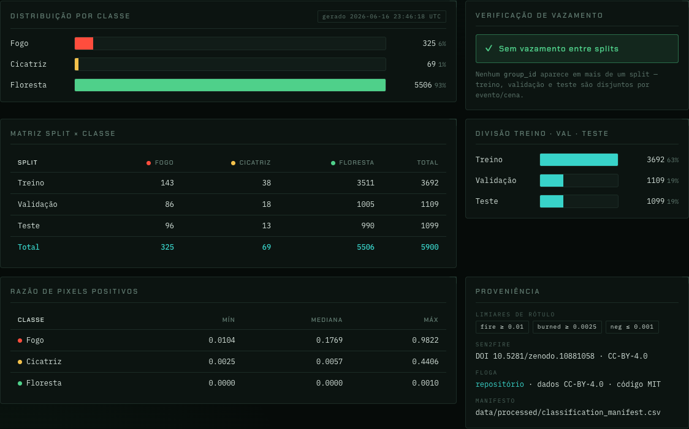
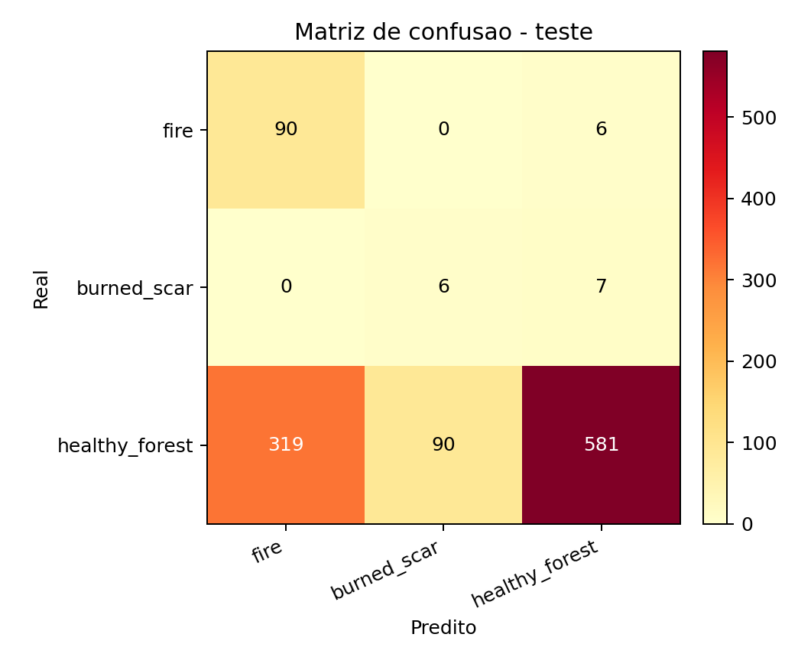
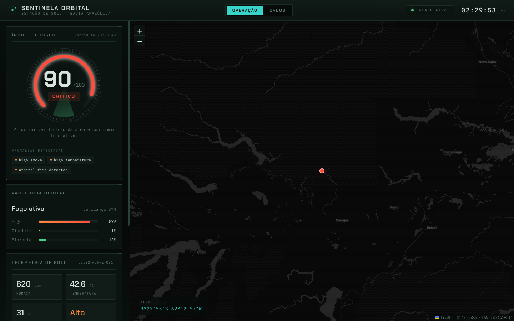
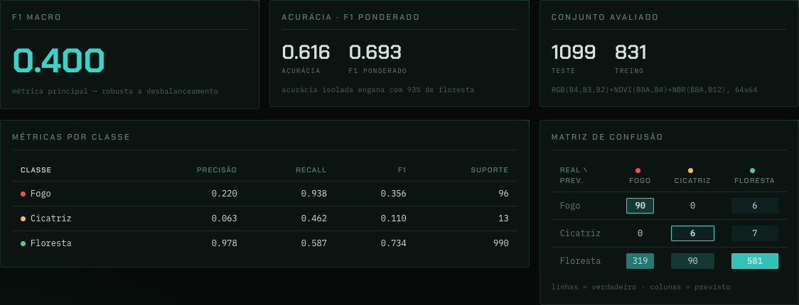

Sub Global Solution 2026.1 · Inteligência Artificial
Sentinela Orbital
Detecção inteligente de queimadas e desmatamento na Amazônia por visão computacional orbital, IoT e nuvem.
Prova de Conceito (POC) — trabalho individual
2026
Detecção inteligente de queimadas e desmatamento na Amazônia por visão computacional orbital, IoT e nuvem.
A exploração espacial deixou de ser apenas científica e tornou-se uma das maiores oportunidades tecnológicas e estratégicas da atualidade. Satélites produzem, diariamente, enormes volumes de imagens da superfície terrestre — um insumo que, combinado à Inteligência Artificial, pode ser convertido em decisões rápidas com impacto direto na vida das pessoas e no meio ambiente.
Este projeto responde à pergunta da Global Solution 2026.1:
Queimadas e desmatamento na Amazônia são, com frequência, detectados tarde demais. Quanto mais cedo um foco é identificado, menor a área queimada e menores os danos ambientais, econômicos e sociais. A janela entre o início de um foco e a resposta de combate é decisiva — e é exatamente nessa janela que dados orbitais e IA podem atuar.
O Sentinela Orbital é um sistema ponta a ponta de alerta precoce que:
fogo, cicatriz de queimada e floresta saudável;A combinação de um sinal orbital (visão de cima) com um sinal de solo (sensor local) reduz falsos negativos: um foco pode ser sugerido pela imagem e confirmado pela fumaça/temperatura no terreno, ou vice-versa.
| Eixo técnico | Como o projeto atende |
|---|---|
| Machine Learning / Visão Computacional | CNN treinada em PyTorch classificando imagens orbitais, com métricas reproduzíveis |
| Análise de dados / pipeline | Pipeline reproduzível de ingestão e rotulagem + EDA documentada |
| Computação em nuvem / serverless / APIs | API publicada no Google Cloud Run; modelo armazenado em Cloud Storage |
| Sensores / IoT / ESP32 | Firmware ESP32 simulado (Wokwi) emitindo fumaça e temperatura |
| Dashboard inteligente | Front-end próprio com mapa de risco, métricas e alertas |
O sistema integra quatro componentes independentes, acoplados por um contrato de API estável (formato de requisição/resposta), o que permite desenvolver e testar cada parte em paralelo.
Em vez de um dataset pronto e de licença incerta, optou-se por derivar um dataset de classificação a partir de máscaras orbitais de duas fontes públicas com licença clara:
fogo.cicatriz de queimada.Cada patch recebe um rótulo por cobertura dominante: se a fração de pixels positivos da máscara ultrapassa um limiar, a classe é atribuída; patches sem evidência relevante tornam-se negativos (floresta saudável). A regra central, em código:
# proporção de pixels positivos define a classe do patch
def label_from_ratio(ratio, positive_label, positive_threshold, negative_threshold):
if ratio >= positive_threshold:
return positive_label # fogo / cicatriz
if ratio <= negative_threshold:
return "healthy_forest" # negativo
return None # zona intermediária: descartadaO split treino/validação/teste é feito por grupo (cena, no Sen2Fire; evento, no FLOGA), garantindo que patches de uma mesma área não apareçam em conjuntos diferentes — evitando vazamento espacial. A verificação de vazamento confirmou zero grupos compartilhados entre splits.

floresta concentra 93% das amostras e cicatriz apenas 1,2% (69 amostras). Isso decorre da resolução de 60 m adotada (que dilui a fração queimada por patch) e é tratado no treino por rebalanceamento, além de orientar o uso de F1 macro como métrica principal.O modelo é uma CNN compacta em PyTorch. A maior dificuldade foi unificar duas fontes com bandas diferentes; a solução foi projetar cada patch em uma representação comum de 5 canais — RGB mais dois índices espectrais sensíveis a vegetação e queimada (NDVI e NBR), em 64×64:
# índice normalizado robusto (NDVI = NIR,RED | NBR = NIR,SWIR2)
def safe_index(a, b):
denom = a + b
out = np.zeros_like(a, dtype=np.float32)
np.divide(a - b, denom, out=out, where=np.abs(denom) > 1e-6)
return np.clip(out, -1.0, 1.0)
# entrada final: RGB + NDVI + NBR
return np.concatenate([rgb, ndvi[None], nbr[None]], axis=0)A arquitetura empilha blocos convolucionais com pooling e uma cabeça linear:
class SmallBurnCNN(nn.Module):
def __init__(self, in_channels=5, num_classes=3):
super().__init__()
self.features = nn.Sequential(
conv_block(in_channels, 16), nn.MaxPool2d(2),
conv_block(16, 32), nn.MaxPool2d(2),
conv_block(32, 64), nn.MaxPool2d(2),
conv_block(64, 96), nn.AdaptiveAvgPool2d(1))
self.head = nn.Sequential(nn.Flatten(), nn.Dropout(0.2),
nn.Linear(96, num_classes))Para enfrentar o desbalanceamento, o treino combina quatro técnicas: subamostragem da classe majoritária (650 amostras), WeightedRandomSampler inverso à frequência, pesos de classe na função de perda e data augmentation reforçando as classes minoritárias (espelhamento, rotação e leve jitter).
| Classe | Precisão | Recall | F1 | Suporte |
|---|---|---|---|---|
| fogo | 0,220 | 0,938 | 0,356 | 96 |
| cicatriz | 0,063 | 0,462 | 0,110 | 13 |
| floresta | 0,978 | 0,587 | 0,734 | 990 |

cicatriz tem desempenho fraco, limitado pelo suporte mínimo (13 amostras de teste); é a principal frente de evolução.A inferência e a fusão dos sinais são expostas por uma API serverless no Google Cloud Run (container que escala a zero), com o artefato do modelo versionado em Cloud Storage. O endpoint é público e está ativo durante a demonstração. O contrato define entradas (imagem + sensor) e saídas (classe orbital, nível de sinal, risco e recomendação).
A regra de fusão de risco combina o sinal orbital e o de solo em um escore de 0 a 100:
# orbital + solo → escore e nível de risco
score = 10
if orbital_class == "fire": score += 50
elif orbital_class == "burned_scar": score += 30
score += {"low":0,"moderate":15,"high":30,"critical":40}[sensor_level]
score = max(0, min(100, score))
level = "critical" if score >= 85 else "high" if score >= 65 \
else "moderate" if score >= 35 else "low"O serviço trata validação de entrada (rejeitando valores ausentes, não numéricos ou fora de faixa com 400 invalid_payload) e habilita CORS, permitindo que o dashboard o consuma diretamente do navegador.
O componente de solo é um ESP32 simulado no Wokwi (declarado abertamente como simulação) que lê fumaça e temperatura e emite leituras no exato formato esperado pela API:
{"device_id":"esp32-wokwi-001","smoke_ppm":620,"temperature_c":42.6,
"humidity_pct":31.4,"latitude":-3.4653,"longitude":-62.2159}A simulação é reproduzível e gravável, e o mesmo payload alimenta a fusão de risco da API — fechando o ciclo solo → nuvem → dashboard.
O dashboard foi construído sob medida (HTML, CSS e JavaScript puro com a biblioteca de mapas Leaflet), sem framework — leve e sem etapa de build. A interface adota a metáfora de um console de estação de solo, com duas vistas: Operação (alerta, classificação, telemetria e mapa) e Dados (EDA e métricas do modelo).


O desenvolvimento foi iterativo e por fases (fundação → dados → modelo → nuvem → IoT → dashboard → documentação), com revisão cruzada e dupla verificação a cada entrega: cada passo é construído, criticamente revisado, ajustado e validado antes de avançar. As decisões técnicas relevantes ficam registradas em docs/decisoes/.
O Sentinela Orbital entrega um fluxo ponta a ponta funcional e demonstrável:
O impacto pretendido é direto: quanto mais cedo um foco é sinalizado, menor a área queimada. Como ferramenta de triagem, o sistema prioriza não deixar passar focos reais, encaminhando áreas suspeitas para verificação — transformando dados da economia espacial em resposta mais rápida no solo.
cicatriz de queimada tem suporte muito baixo (60 m de resolução), o que limita seu desempenho e a confiabilidade de suas métricas.O projeto demonstra, de ponta a ponta, como dados da nova economia espacial — combinados a IoT, machine learning e computação em nuvem — podem gerar impacto positivo na Terra, aplicados a um problema crítico do Brasil: a detecção precoce de queimadas e desmatamento na Amazônia.
Mais do que um número de acurácia, o resultado relevante é a arquitetura integrada e funcional e a postura de honestidade técnica: as métricas reais são apresentadas com suas limitações, e as decisões (fontes, resolução, rebalanceamento, escolha de métrica) são justificadas. O recall de fogo elevado mostra que, mesmo com um modelo compacto e dados desbalanceados, o sistema cumpre seu papel de alerta precoce.
| Recurso | Endereço |
|---|---|
| Repositório do projeto | github.com/japatraderdev99/global-solution |
| Vídeo demonstrativo (YouTube · Não Listado) | https://youtu.be/cfvNSuIKALU |
Sentinela Orbital · Sub Global Solution 2026.1 · Guilherme Yamada Dantas — RM568506